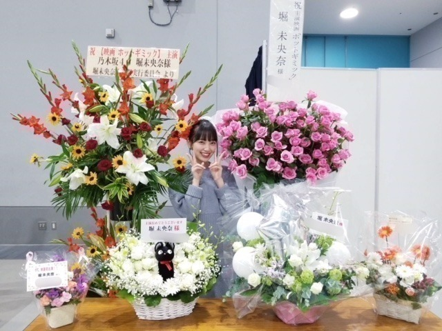

2018/1005Friふとしたとき
最近よく聴く
チャットモンチーさん。
絶妙な歌詞とメロディが癖になります。
女子は特に好きな世界観ですよね！
染まるよ
真夜中遊園地
恋の煙
バスロマンス
例えば、
が好き

渋谷
握手会ブースに祝花！
嬉しい ありがとうございます！


前回の自己紹介ブログ
どうでしたか？

メイクやヘアなど女の子向けブログも
今、書いてます〜
質問あれば、何でもこちらにどうぞ。

このポーズ自分の中で
はまってるみたい。笑
なんかじわじわ
では！
2018/10/05 15:36
コメント(666)
ほりちゃんこんばんわ！
私は今年大学受験のため、疲れているとき堀ちゃんのブログをみて癒されてます(^ ^)
前回のブログで堀ちゃんのこといろいろ知れて嬉しいです☺︎
岐阜出身なんだ〜意外〜って思った笑
映画も好きなんだね！私も好き！でも、受験勉強で忙しくてみれない(;_;) 受験終わったら堀ちゃんのオススメの映画みるね！
質問なんですけど、全然頑張れないとき、自分のことを信じられないときってどうすればいいと思いますか？
私は今年大学受験のため、疲れているとき堀ちゃんのブログをみて癒されてます(^ ^)
前回のブログで堀ちゃんのこといろいろ知れて嬉しいです☺︎
岐阜出身なんだ〜意外〜って思った笑
映画も好きなんだね！私も好き！でも、受験勉強で忙しくてみれない(;_;) 受験終わったら堀ちゃんのオススメの映画みるね！
質問なんですけど、全然頑張れないとき、自分のことを信じられないときってどうすればいいと思いますか？
前髪のセットの方法知りたいです！
みおなちゃん大好きです〜！
みおなちゃん大好きです〜！
変わらず可愛い！
映画絶対に見に行きます。
次のブログの更新待ってる！
映画絶対に見に行きます。
次のブログの更新待ってる！
こんばんは～
映画おめでとうございます！
生き生きして撮影に望む姿が目に浮かびます。
楽しんでください！
あと、前回のブログで触れられていた「きみに読む物語」はとても印象的な作品です。まとまった時間に、ぜひ最後まで通しで見てほしいと思います。
映画おめでとうございます！
生き生きして撮影に望む姿が目に浮かびます。
楽しんでください！
あと、前回のブログで触れられていた「きみに読む物語」はとても印象的な作品です。まとまった時間に、ぜひ最後まで通しで見てほしいと思います。
ソフィーナの化粧品で愛用しているものありますか
堀ちゃんの毎日メイク教えて欲しい！！！！
ずっと長年使ってるオススメ美容品教えて欲しい！！！！
ダイエットでやってたことを教えて欲しい！！！！
ずっと長年使ってるオススメ美容品教えて欲しい！！！！
ダイエットでやってたことを教えて欲しい！！！！
すっごく可愛いですね。撮影頑張って下さい。
こんばんは またきてしまいました 堀さんには とても不思議な魅力があるじゃないかなと思います それに引き寄せられ きてしまいました 特に書くこともないので これで失礼します
頑張って下さい
頑張って下さい
755総合ランキング１位おめでとうございます
未央奈ちゃんは
あの“レモン牛乳”がプリンになった「関東・栃木レモンプリン」て知ってる
美味しいから見かけたら食べてみて！
٩(^‿^)۶
未央奈ちゃんは
あの“レモン牛乳”がプリンになった「関東・栃木レモンプリン」て知ってる
美味しいから見かけたら食べてみて！
٩(^‿^)۶
女の子向けブログ楽しみに待ってます！新しいマスカラを買おうと思ってるのですが、どれがいいか迷ってて、、、ぜひ良かったらみおなのオススメ聞きたいです！
みおなちゃん、こんにちは！
女の子ブログ楽しみ!
今年のクリスマスコフレで気になってる物とかあったら知りたいな(*´`)
明日からもfight!!
女の子ブログ楽しみ!
今年のクリスマスコフレで気になってる物とかあったら知りたいな(*´`)
明日からもfight!!
堀さん、こんばんは。生誕Tシャツ届きました。大事にしますね。
チャットモンチーさんはラストライブをwowowで見て、「染まるよ」と他何曲か気に入ってたのをすっかり忘れてました。早速借りてこようと思います。思い出させてくれて助かりました。
花に囲まれた堀さんの笑顔は完璧すぎます。問答無用で人を幸せにする笑顔です。ただ、写真の２枚目から５枚目にかけて右手がじわじわと最後のポーズに向かってにじり寄ってるのには少しだけホラーを感じました。
自己紹介ブログ長くてとてもよかったと思います。特に次のシングルに関する話題で乃木坂全体への視野の広さみたいなものを感じて、センターからアンダーまで、先輩から後輩までの全部の立場を知る唯一の乃木坂メンバーとして、堀さんにしか見えないものがあるんだよなって気づかされました。堀さんの視点はきっと乃木坂に欠かせないものだと思うので、グループでの仕事も頑張ってください。応援してます。
もちろん堀さん個人の大きな仕事であるホットギミックの撮影も頑張ってください。撮影を最後まで無事走り抜けるように祈ってます。
チャットモンチーさんはラストライブをwowowで見て、「染まるよ」と他何曲か気に入ってたのをすっかり忘れてました。早速借りてこようと思います。思い出させてくれて助かりました。
花に囲まれた堀さんの笑顔は完璧すぎます。問答無用で人を幸せにする笑顔です。ただ、写真の２枚目から５枚目にかけて右手がじわじわと最後のポーズに向かってにじり寄ってるのには少しだけホラーを感じました。
自己紹介ブログ長くてとてもよかったと思います。特に次のシングルに関する話題で乃木坂全体への視野の広さみたいなものを感じて、センターからアンダーまで、先輩から後輩までの全部の立場を知る唯一の乃木坂メンバーとして、堀さんにしか見えないものがあるんだよなって気づかされました。堀さんの視点はきっと乃木坂に欠かせないものだと思うので、グループでの仕事も頑張ってください。応援してます。
もちろん堀さん個人の大きな仕事であるホットギミックの撮影も頑張ってください。撮影を最後まで無事走り抜けるように祈ってます。
未央奈ー、こんにちは。
では、質問です。 好きな、雑誌とか本とか、マンガってある？ 良ければ、教えてね♪
毎日を、楽しく生きたい。 またね、さよなら。☺︎...♪*ﾟ♬｡.♪*ﾟ^^*♡♥


では、質問です。 好きな、雑誌とか本とか、マンガってある？ 良ければ、教えてね♪
毎日を、楽しく生きたい。 またね、さよなら。☺︎...♪*ﾟ♬｡.♪*ﾟ^^*♡♥
みおなちゃんこんばんは～⭐️ヽ(^。^)ノ
みおながチャットモンチー
聴いてるんだっ！！と思い。。
コメントにきた次第です！！(^_^ゞ
染まるよ
良いよね～⭐️
ﾟ+.ﾟ(*´∀`)bﾟ+.ﾟ
自分のオススメ曲は、、
8㎝のピンヒール
手の中の残り日
Y氏の夕方
湯気
ツマサキ
橙
あとやっぱり。。
サラバ青春は名曲。。
それでは。。
((o(￣ー￣)o))
みおながチャットモンチー
聴いてるんだっ！！と思い。。
コメントにきた次第です！！(^_^ゞ
染まるよ
良いよね～⭐️
ﾟ+.ﾟ(*´∀`)bﾟ+.ﾟ
自分のオススメ曲は、、
8㎝のピンヒール
手の中の残り日
Y氏の夕方
湯気
ツマサキ
橙
あとやっぱり。。
サラバ青春は名曲。。
それでは。。
((o(￣ー￣)o))
未央奈ちゃん〜♡♡
いつもお仕事お疲れ様o( ^_^ )o
未央奈ちゃんが使ってるメイク道具と仕方詳しく教えて欲しいな！
特に化粧下地、リップ気になる！！
あと普段着てる服もどこで買ってるのかも気になるな〜！
また女の子向けのブログで教えて(^_^)
未央奈ちゃん好きだから一緒の使いたいし参考にもなってるしよろしくお願いします(^-^)
いつもお仕事お疲れ様o( ^_^ )o
未央奈ちゃんが使ってるメイク道具と仕方詳しく教えて欲しいな！
特に化粧下地、リップ気になる！！
あと普段着てる服もどこで買ってるのかも気になるな〜！
また女の子向けのブログで教えて(^_^)
未央奈ちゃん好きだから一緒の使いたいし参考にもなってるしよろしくお願いします(^-^)
質問だけど、運転免許は取るんですか？それでもし取ったら、運転するんですか？
みおなちゃんおはよう今日は天気いいね
ホットギミック
原作見てからふ
映画観たほうがいい？
それとも原作見ないほうがいい？
原作見てからふ
映画観たほうがいい？
それとも原作見ないほうがいい？
堀ちゃん、かわいい〜
こんにちは
前回の自己紹介ブログ、
すごく良かったですよ〜☺︎
ありがとう！
素敵な内容でした♪
今回もかわいい写真、ありがとう♡
ずっと堀未央奈を応援しています！！
また☺︎！
前回の自己紹介ブログ、
すごく良かったですよ〜☺︎
ありがとう！
素敵な内容でした♪
今回もかわいい写真、ありがとう♡
ずっと堀未央奈を応援しています！！
また☺︎！
歯医者にいきました。
未央奈は親不知もう大丈夫ですか？
未央奈は親不知もう大丈夫ですか？
未央奈ちゃん、ひろっしーです！コメント投稿516回目です！
前回はブログ「床が落ち着く。」にモバメの感想を書きました！
時間→「No.454 2018年10月 4日 01:27」
ブログ更新ありがとうございます！
コメント遅くなってスミマセン！
チャットモンチーさんの曲、この機会に聴いてみたのですが良い曲ばかり！たまには違う方の曲を聴いてみるのも良いですね！
祝花の写真ですが、改めて未央奈ちゃんは花が似合うな～と思いました！カラフルで素敵！
前回の自己紹介ブログ、これも改めてになってしまいますが、改めて未央奈ちゃんを知る事が出来て良かったですし、沢山書かれていて凄く嬉しかったです！また大好きになりました！
今回も沢山可愛い写真ありがとうございます！
このポーズ、ハマってるんですね！
もぉ～、何しても可愛いんだから～！
ここまで読んで頂きありがとうございました！
毎日お仕事お疲れ様です！体調にはくれぐれも気を付けて頑張ってくださいね！
ではでは！
前回はブログ「床が落ち着く。」にモバメの感想を書きました！
時間→「No.454 2018年10月 4日 01:27」
ブログ更新ありがとうございます！
コメント遅くなってスミマセン！
チャットモンチーさんの曲、この機会に聴いてみたのですが良い曲ばかり！たまには違う方の曲を聴いてみるのも良いですね！
祝花の写真ですが、改めて未央奈ちゃんは花が似合うな～と思いました！カラフルで素敵！
前回の自己紹介ブログ、これも改めてになってしまいますが、改めて未央奈ちゃんを知る事が出来て良かったですし、沢山書かれていて凄く嬉しかったです！また大好きになりました！
今回も沢山可愛い写真ありがとうございます！
このポーズ、ハマってるんですね！
もぉ～、何しても可愛いんだから～！
ここまで読んで頂きありがとうございました！
毎日お仕事お疲れ様です！体調にはくれぐれも気を付けて頑張ってくださいね！
ではでは！
ブログ更新ありがと！
質問です！お肌の手入れについて聞きたいです！
最近肌荒れしてきたなぁと感じてるので(+_+)
自分でも洗顔や保湿、お水を沢山飲んだりしてるんですけど。。
未央奈ちゃんのオススメのお手入れ教えてください！
いつも応援してます✨映画楽しみにしてます
質問です！お肌の手入れについて聞きたいです！
最近肌荒れしてきたなぁと感じてるので(+_+)
自分でも洗顔や保湿、お水を沢山飲んだりしてるんですけど。。
未央奈ちゃんのオススメのお手入れ教えてください！
いつも応援してます✨映画楽しみにしてます
みおな〜♪
今日はあっついね〜
もう10月というのにこの陽射し
まだまだ、冬は遠しかな
わかとあみが卒業発表したね...
二人とも初期から乃木坂を
形作ってきた個性溢れるメンバー
寂しいよ、凄く寂しい...
卒業発表がこうも続くと
正直、胃に堪えるよ
でも、みんな前向きな卒業！
これからの活躍を楽しみに
変わらず応援していきたいと
思います！
一年前に自分が何について
悩んでいたか覚えていますか？
二年前はどう？
ずっきゅん依存症は少しも覚えていません
つまり、今悩んでいることも
一年後にはなくなってしまうんだ
悩みとはなにか？
自分ではどうにもならないことを
悩みといいます
自分でどうにかなるなら、
なんとかしてるはずだから、
悩みにならないよね？
自分がなにかをして、あれを解決して、
これを解決して、なんとか悩みが
解消したなんて話はあまり聞いたことがない
悩みは自然と消えるもの
時間は自分の味方です
刻一刻、味方が悩みを解消してくれてるよ
今日はあっついね〜
もう10月というのにこの陽射し
まだまだ、冬は遠しかな
わかとあみが卒業発表したね...
二人とも初期から乃木坂を
形作ってきた個性溢れるメンバー
寂しいよ、凄く寂しい...
卒業発表がこうも続くと
正直、胃に堪えるよ
でも、みんな前向きな卒業！
これからの活躍を楽しみに
変わらず応援していきたいと
思います！
一年前に自分が何について
悩んでいたか覚えていますか？
二年前はどう？
ずっきゅん依存症は少しも覚えていません
つまり、今悩んでいることも
一年後にはなくなってしまうんだ
悩みとはなにか？
自分ではどうにもならないことを
悩みといいます
自分でどうにかなるなら、
なんとかしてるはずだから、
悩みにならないよね？
自分がなにかをして、あれを解決して、
これを解決して、なんとか悩みが
解消したなんて話はあまり聞いたことがない
悩みは自然と消えるもの
時間は自分の味方です
刻一刻、味方が悩みを解消してくれてるよ
女の子向けブログ楽しみにしてます！
アイメイクのコツとスキンケアについて詳しく書いてくれると嬉しいです
アイメイクのコツとスキンケアについて詳しく書いてくれると嬉しいです
香水やハンドクリームなどの香りものは何使ってますか？？
堀ちゃんおつかれ！
チャットモンチーは聞かないけど、
何かの歌の歌詞でふと元気付けられることってあるよね。
そういうものを敏感にキャッチして
取り込める、あるいはそれで前向きになれるなら
それは幸せなことだとおもうなー。
チャットモンチーは聞かないけど、
何かの歌の歌詞でふと元気付けられることってあるよね。
そういうものを敏感にキャッチして
取り込める、あるいはそれで前向きになれるなら
それは幸せなことだとおもうなー。
写真かわいい!!スゴいねーー。
頑張っ!
俺も頑張る
頑張っ!
俺も頑張る
堀ちゃんこんにちは！！
この前の自己紹介ブログ、めちゃくちゃ好きです！！(o^^o)
好きな人の好きなものや好きなことを知れるっていうのは、なんだか凄く嬉しいことですね( ´ ▽ ` )
それに堀ちゃんの好きなことってだけで興味も湧きますし、堀ちゃんきっかけで好きになった物事もいくつかあります(o^^o)
もっと好きな人のこと、堀ちゃんのことを知りたいな〜って常に思ってるので、自己紹介ブログハマっちゃいました、書籍化希望です( ´ ▽ ` )笑
最近個人的なことでちょっと色々あったんですが、堀ちゃんの素敵なブログを何回か読み返させてもらって、元気をもらいながら頑張れました( ´ ー ` )
堀ちゃんはいつもファンのことを想ってくれて大切してくれて、ライブやこうしたブログでも僕たちに元気や幸せを与えてくれて、本当にいつも感謝の気持ちでいっぱいです(^^)
貰ってばかりの僕たちですが、微力ながらもずっと堀ちゃんを好きでいること、応援することだけはできるので、届く届かないは関係なく応援し続けます！
これからも好きでいさせてください、ダメと言われても勝手に好きでいますけど( ´ ▽ ` )笑
さてさて、最近すっかり秋ですね〜(^^)
今日、なにやら懐かしい香りがするなぁと思ったら金木犀が咲いていました( ´ ▽ ` )
実家の庭に植えてある思い出と、甘く優しい香りが好きなのとが重なって、咲いているのを見ると嬉しくなります(o^^o)
堀ちゃんにも秋といえばの中に金木犀っていうイメージもありますかね？東京にも結構植えてあるイメージなので、ふとしたときに見つけてもらえると嬉しいです！(^^)
ではでは、お忙しいと思いますが毎日が堀ちゃんにとって楽しいものでありますように！
また来ます！( ´ ▽ ` )笑
この前の自己紹介ブログ、めちゃくちゃ好きです！！(o^^o)
好きな人の好きなものや好きなことを知れるっていうのは、なんだか凄く嬉しいことですね( ´ ▽ ` )
それに堀ちゃんの好きなことってだけで興味も湧きますし、堀ちゃんきっかけで好きになった物事もいくつかあります(o^^o)
もっと好きな人のこと、堀ちゃんのことを知りたいな〜って常に思ってるので、自己紹介ブログハマっちゃいました、書籍化希望です( ´ ▽ ` )笑
最近個人的なことでちょっと色々あったんですが、堀ちゃんの素敵なブログを何回か読み返させてもらって、元気をもらいながら頑張れました( ´ ー ` )
堀ちゃんはいつもファンのことを想ってくれて大切してくれて、ライブやこうしたブログでも僕たちに元気や幸せを与えてくれて、本当にいつも感謝の気持ちでいっぱいです(^^)
貰ってばかりの僕たちですが、微力ながらもずっと堀ちゃんを好きでいること、応援することだけはできるので、届く届かないは関係なく応援し続けます！
これからも好きでいさせてください、ダメと言われても勝手に好きでいますけど( ´ ▽ ` )笑
さてさて、最近すっかり秋ですね〜(^^)
今日、なにやら懐かしい香りがするなぁと思ったら金木犀が咲いていました( ´ ▽ ` )
実家の庭に植えてある思い出と、甘く優しい香りが好きなのとが重なって、咲いているのを見ると嬉しくなります(o^^o)
堀ちゃんにも秋といえばの中に金木犀っていうイメージもありますかね？東京にも結構植えてあるイメージなので、ふとしたときに見つけてもらえると嬉しいです！(^^)
ではでは、お忙しいと思いますが毎日が堀ちゃんにとって楽しいものでありますように！
また来ます！( ´ ▽ ` )笑
最近、乃木坂での変動が大きすぎて
中々、気持ちがついていかないよ〜
自分の中の乃木坂像ってものがあって、
それが壊れていくんじゃないかという不安
選抜メンバーも目まぐるしく変わって
卒業メンバーも続々現れて
乃木坂はどうなっちゃうの〜って感じ...
でも、これが乃木坂の良さ！
生駒ちゃんも言ってたけど変わっていく
乃木坂も含めて楽しんで欲しいって
だから、期待と希望を込めて
これからも乃木坂を全力で応援します！
大好きな乃木坂！
大好きなメンバー！
いつも、幸せを届けてくれて
ありがとう！
中々、気持ちがついていかないよ〜
自分の中の乃木坂像ってものがあって、
それが壊れていくんじゃないかという不安
選抜メンバーも目まぐるしく変わって
卒業メンバーも続々現れて
乃木坂はどうなっちゃうの〜って感じ...
でも、これが乃木坂の良さ！
生駒ちゃんも言ってたけど変わっていく
乃木坂も含めて楽しんで欲しいって
だから、期待と希望を込めて
これからも乃木坂を全力で応援します！
大好きな乃木坂！
大好きなメンバー！
いつも、幸せを届けてくれて
ありがとう！
日テレ系で10月から新ドラマで新垣さんがドラマやりますね
未央奈さんもみますか？
未央奈さんもみますか？
ブログ更新ありがとうございます！
いつも応援しています！
いつも応援しています！
松井玲奈さんも、ドラマによくでてますね。
未央奈も見られるようになったら嬉しいです。
未央奈も見られるようになったら嬉しいです。
渋谷も大分変った感じがするなぁ～。時代は常に動いている・・
時の流れは速いなぁ～。しばらく握手会に参加していないから余計にそう思うのかもしれない・・今度参加出来る機会があれば本当に「初めまして」って感じになりそうです。
時の流れは速いなぁ～。しばらく握手会に参加していないから余計にそう思うのかもしれない・・今度参加出来る機会があれば本当に「初めまして」って感じになりそうです。
好き
久しぶり( ´_ゝ`)
みおなってコメント見てるの？
自己紹介よかったぁ。もっとみおなの事しりたぁい。
みおなってコメント見てるの？
自己紹介よかったぁ。もっとみおなの事しりたぁい。
間もなく乃木中
未央奈今回はでてないかな？
撮影 忙しいからね。
未央奈今回はでてないかな？
撮影 忙しいからね。
私もチャットモンチー好きです。風吹けば恋 のカップリングの 推進力 という曲も良いので、聴いてみてください。
堀さんの感性なら、きっと素晴らしい作詞作曲の歌が出来ると思います。堀さんは天才です。堀さんは光り輝くために生まれてきまし堀さんは本物のスターの中のスターです。
あ、どうも。こんばんは！はつみちゃん
遅ればせながら前回のブログにもコメントしたので見てね〜！✨
未央奈おすすめの曲。
教えてくれてありがとっ！聴いてるよ〜。
ほんと。歌詞とメロディが癖になる。。
男子だけどね。笑う
わおっ、突然の渋谷。笑
人がわんさかいて、この人はどこへ行くんだろ？え？この人はどっから来たの？はて？って好奇心がとどまるところを知らない場所だよね！
都会のほうに行こうとするとき必ず経由してシブツタとか立ち寄ってる〜笑
祝花！おめでとう！
ジジいるじゃん！笑
嬉しそうな笑顔。笑
自己紹介ブログ最高だったよ♪
文章から未央奈の性格が溢れ出てたもん。笑
かわいい写真。(^-^)
質問かぁ。
眠いながらも早起きしてる未央奈ですが、仕事モードの自分にするためにしてることとかありますか〜？？
笑った。
ふとしたとき、そういうポーズしてたらこっちは大笑いですわ。笑
ほんとかわいいなぁ。
よっしゃ！明日からもがんばろー！！
では！☺︎
おやすみおな〜〜
遅ればせながら前回のブログにもコメントしたので見てね〜！✨
未央奈おすすめの曲。
教えてくれてありがとっ！聴いてるよ〜。
ほんと。歌詞とメロディが癖になる。。
男子だけどね。笑う
わおっ、突然の渋谷。笑
人がわんさかいて、この人はどこへ行くんだろ？え？この人はどっから来たの？はて？って好奇心がとどまるところを知らない場所だよね！
都会のほうに行こうとするとき必ず経由してシブツタとか立ち寄ってる〜笑
祝花！おめでとう！
ジジいるじゃん！笑
嬉しそうな笑顔。笑
自己紹介ブログ最高だったよ♪
文章から未央奈の性格が溢れ出てたもん。笑
かわいい写真。(^-^)
質問かぁ。
眠いながらも早起きしてる未央奈ですが、仕事モードの自分にするためにしてることとかありますか〜？？
笑った。
ふとしたとき、そういうポーズしてたらこっちは大笑いですわ。笑
ほんとかわいいなぁ。
よっしゃ！明日からもがんばろー！！
では！☺︎
おやすみおな〜〜
みおなちゃんおはよう天気いいね握手会がんばってね
落ちにくいリップの塗り方教えて欲しいです〜！！♡
未央奈は免許とらないの？
こんにちは♪
突然の自己紹介スタートに？？？って思ったけど、意外に知らない事も多くて新鮮だった！O型だったんだ！
岐阜って良いところだよね、大垣はよく通るんだけど、この前｢聲の形｣を観て久しぶりにかなりのめり込んで観た(笑)｢君の名は。｣以来かな。
岐阜はそれだけでなくニュートリノ観測装置｢スーパーカミオカンデ｣や重力波望遠鏡｢KAGRA｣とかすごい施設がたくさんあって、宇宙と繋がりのある県なんだって！
料理得意なんや！食べてみたいなぁ～～
なんかじわじわ
突然の自己紹介スタートに？？？って思ったけど、意外に知らない事も多くて新鮮だった！O型だったんだ！
岐阜って良いところだよね、大垣はよく通るんだけど、この前｢聲の形｣を観て久しぶりにかなりのめり込んで観た(笑)｢君の名は。｣以来かな。
岐阜はそれだけでなくニュートリノ観測装置｢スーパーカミオカンデ｣や重力波望遠鏡｢KAGRA｣とかすごい施設がたくさんあって、宇宙と繋がりのある県なんだって！
料理得意なんや！食べてみたいなぁ～～
なんかじわじわ
はつみちゃんおはよう！
雨降らないと良いね〜…また台風来てるんだって
撮影頑張ってね。楽しんでねいこ〜
雨降らないと良いね〜…また台風来てるんだって
撮影頑張ってね。楽しんでねいこ〜
未央奈に単独CMオファーこないかな？
なんかみおなちゃんの世界観が好き！
未央奈ブログありがと！！
個握当たったから行くね！！
待っててね！
いつも応援してます！
個握当たったから行くね！！
待っててね！
いつも応援してます！
お疲れ様です...♪*ﾟ
ベースメイクと、
乾燥の季節になるので
ハンドクリームorボディークリーム教えてください!!
ベースメイクと、
乾燥の季節になるので
ハンドクリームorボディークリーム教えてください!!


今日は晴れて良かったね♪
今年の秋はどんな秋になるのか
楽しみにしにながら頑張ろ☺︎
観劇したい舞台もいっぱいあるから行けたらいいな。
写真めっちゃ良きです♪